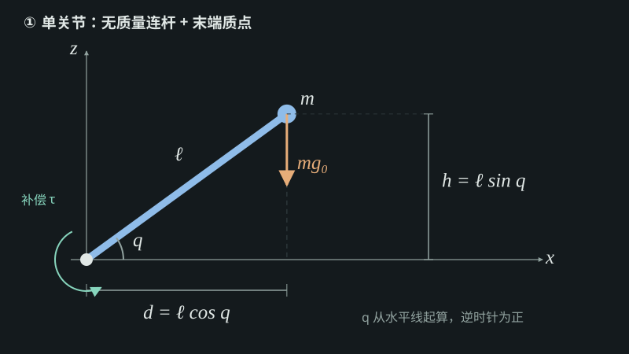
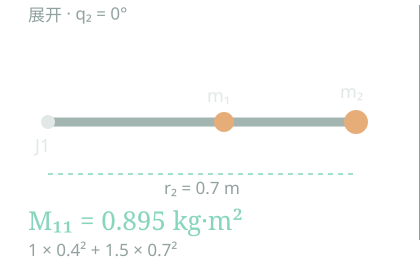
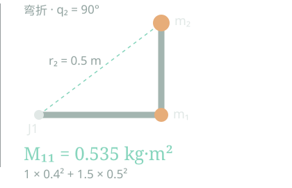

先观察，再理解 · 01
在「静止悬停」模式下，只有重力一栏非零：它是电机托住各个关节下游重量所需的补偿力矩。加入加速度会产生惯性项；加入速度后，科氏和离心项也参与计算。四栏始终同时列出，合计就是当前状态的驱动力矩。
从这个实验理解动力学 →从完整的动力学方程出发
M(q)q̈ + C(q,q̇)q̇ + g(q) = τ
静止 · 速度为零 · 加速度为零 · 无外力
τ = g(q)先从这一项开始。
一条连续的学习路径
观察 → 预测 → 实验 → 公式 → 实现学完这一辑，你能解释：怎样托住重量，怎样产生加速度，为什么会有惯性耦合，以及拖拽与关节柔顺怎样实现。需要的起点是基本三角函数；向量叉乘会随实验一起解释。
真实模型YAM v1 的六个转动关节，使用固定版本 URDF 的质量、质心与几何参数。
原理可复现数值计算在浏览器中完成。公式、假设、源码与验证方法一起公开。
逐步展开主线建立物理直觉。推导、RNEA 与实现细节放在可展开的阅读层。
01 / 从刚才的观察开始
这些补偿力矩，是怎么算出来的？
先让所有关节静止。没有外部接触，忽略摩擦与弹性，只留下重力。
M(q)q̈ + C(q,q̇)q̇ + g(q) = τ + τext静止：q̇ = 0，q̈ = 0，无外部接触：τext = 0 → τ = g(q)
机械臂伸出去时，后面每根连杆的重量都会作用到上游关节。改变角度，质心与关节轴之间的几何关系改变，所需补偿力矩也随之改变。
试着做：选择一个下游关节，点击“试转 +30°”，同时比较六个关节的参考力矩、当前力矩和变化量。留意自己的角度没动、补偿却变了的上游关节。
先预测，再验证
保持上游关节的角度不动，只转动下游关节，上游的重力补偿会不会变？
模型究竟提供了什么？
URDF：质量、局部质心→正运动学：世界质心→重力、力臂、关节轴→各关节的 g(q)
质量、安装方向、负载和重力方向固定后，重力项只随姿态变化。它不需要先计算整个质量矩阵 M(q)。
展开：本实验的模型与假设
YAM v1，六个转动关节；两指锁定于 URDF 零位置。含夹爪和手指，运动部分质量 4.110856 kg。基座固定，世界 Z 轴向上。不包含额外负载、摩擦、柔性和独立的电机反射转子惯量。显示网格做过简化，惯性与几何计算参数保留原始精度。
查看模型来源与验证方法。
第一课补充 A / 从一根杆到两根杆
重量没有变，
变化的是力臂。
从水平线起算角度，逆时针为正。杆先假设没有质量，把质量集中在末端。

同一几何关系，可以从“力臂”或“高度”两个角度理解。两种算法，一个答案
重力向下，关于关节的水平力臂是 ℓ cos q。物理重力矩为负，电机补偿取相反方向。
g(q) = mg₀ℓ cos q力臂法：重量 × 带符号力臂，g₀ = 9.81 m/s²
质点的高度是 ℓ sin q，势能 P = mg₀ℓ sin q。缓慢抬起一个小角度时，电机做功 τ dq = dP，因此：
g(q) = ∂P / ∂q = mg₀ℓ cos q对角度求导使用弧度。均匀杆的质量分布可等效到中点，此时质心距离为 ℓ/2。
再加一个关节
q₂ 相对第一根杆定义，第二根杆相对水平线的角度是 q₁ + q₂。
同一份重力，两条计算路径
势能法对每个关节角度求偏导；静止的 Newton–Euler 法从末端往基座合并重量和力矩。书中的 GravityForces 通过调用 RNEA 的 InverseDynamics 计算同一个 g(q)。拖动上面的角度，两边当前姿态的结果会同时更新。
01 势能法 · 对角度求偏导
高度变了多少？
先写总势能P(q₁,q₂) =
g₀[(m₁+m₂)ℓ₁ sin q₁
+ m₂ℓ₂ sin(q₁+q₂)]
固定 q₂，对 q₁ 求偏导g₁ = ∂P/∂q₁
= (m₁+m₂)g₀ℓ₁ cos q₁
+ m₂g₀ℓ₂ cos(q₁+q₂)
固定 q₁，对 q₂ 求偏导g₂ = ∂P/∂q₂
= m₂g₀ℓ₂ cos(q₁+q₂)
当前姿态 · 势能梯度
02 Newton–Euler · 静止受力递推
重量如何传回基座？
J2 · 末端→ 载荷向上游传递 →J1 · 基座
先合并竖直向下的载荷大小F₂ = m₂g₀
F₁ = m₁g₀ + F₂
再对每个关节取力矩，电机抵消重力g₂ = F₂ℓ₂ cos(q₁+q₂)
g₁ = F₁ℓ₁ cos q₁ + g₂
这里的 F₁、F₂ 是向下的重量大小；余弦给出带符号的水平力臂。完整 RNEA 还会向外递推速度与加速度，再向内回传三维 wrench。Modern Robotics §8.3 ↗
当前姿态 · 静止受力递推
两种方法得到同一个 g(q)：它是电机需要施加的补偿力矩，方向与物理重力矩相反。
只改变 q₁，两个质量的高度都会变；只改变 q₂，m₁ 的位置不变。因此 ∂P/∂q₂ 里没有 m₁；受力递推里，J2 也只承受 m₂ 的重量。
展开：从点质量到真实连杆，为什么书中用 RNEA？
势能公式说明答案是什么：若世界 Z 向上，真实连杆的质心高度给出总势能；其梯度就是静止悬停所需的关节力矩。
P(q) = ∑k mkg₀zc,k(q)
gj(q) = ∂P(q) / ∂qj
把刚才的两连杆，按递推顺序再算一遍
二维例子就是静止 RNEA 的骨架
数值随上方滑块变化01 · 前向：定位力臂先用 q₁、q₁+q₂ 算 J2 与 m₂ 在水平方向的位置。
xJ2 = ℓ₁ cos q₁
xm2 = xJ2 + ℓ₂ cos(q₁+q₂)
02 · 后向：先看末端 J2末端重物 m₂ 的重量，对 J2 产生补偿需求。
g₂ = m₂g₀(xm2 − xJ2)
03 · 后向：传回 J1搬到 J1 后，m₂ 又多出一段 ℓ₁ 的力臂；再加 m₁。
g₁ = g₂ + (m₁+m₂)g₀xJ2
这里显示的是电机补偿力矩，符号与真实重力矩相反。第二步已得到网页右侧 Newton–Euler 推导的 g₂；第三步得到同一个 g₁。所谓“后向”，就是先算末端，再把它的重量和转动作用带给上游关节。
RNEA 是书中的通用计算过程：前向求每根连杆的位姿、速度和加速度；后向把各连杆所需的力与力矩汇总到关节，再投影到关节轴。求重力项时设 q̇ = q̈ = 0、末端外部 wrench = 0，并通过虚拟基座加速度 −gworld 注入重力。
URDF 质量、质心与当前 q→前向：连杆状态→后向：汇总 wrench→投影：g(q)
g(q) = ID(q, 0, 0, gworld, 0)ID 表示 Modern Robotics 的 InverseDynamics；这里省略固定的模型参数。世界重力向下，例：gworld = (0, 0, −9.81) m/s²。
同一个 RNEA 入口还可分离出其他动力学量。下面每次调用都保留当前 q、令末端 wrench 为零。每一列质量矩阵用一次单位关节加速度调用求得；速度项则保留 q̇，同时把重力和 q̈ 置零。
本站 YAM 实验的数值实现把每根连杆的重力作用直接投影并累加到上游关节，没有实现书中完整的前向／后向 RNEA；势能的数值梯度只用来独立校验结果。三条路径在这个静止、无接触的模型中得到同一个 g(q)。URDF 的 inertial/mass 和 inertial/origin 提供各连杆质量与局部质心。核对书中算法代码 ↗
检验你的直觉
第一杆水平，第二杆竖直向上时，哪个结论成立？
第一课补充 B / 从二维力臂开始
一根杆、一股力，
它会往哪儿转？
先用二维题热身，再看灰色刚体杆 O→P：把力作用在 P，观察 r、f 和关于 O 的力矩。依次试门、抬高施力点、斜向施力和力沿杆。
力 f · N一支力箭头在 x、y、z 三根轴上的分量。
力矩 m · N·m关于指定参考点的转动作用。方向按右手定则表示转轴。
Wrench · [m; f]这六个数把同一个载荷在一个参考点的作用记下来；前三项是力矩，后三项是力。
把图与 Modern Robotics 第 3 章对齐
O 是本实验的参考点，P 是施力点；rOP、f 与 mO 都用同一组固定的右手坐标轴表达。拖动图只改变视角，不会改变这六个数。
力沿杆时，f 与 r 平行，叉乘为零；这不是“没有力”，而是这股力关于 O 没有转动作用。换一个参考点，力矩分量可能改变。
等这一股力的六维表示清楚以后，才能看多连杆的 RNEA：它把各连杆需要的力与力矩回传，再投影到关节轴。Modern Robotics §8.3 ↗
先预测，再点“抬高施力点”
门的例子中，只把 P 抬高，力仍保持 +y 方向。会新增哪个力矩分量？
重量没有变，
加速需要的力矩却变了。
先选“仅 J1 加速”，再把 J1 的加速度调大、调小或反向。接着拖动姿态，观察矩阵和六台电机的力矩。
01 / 固定姿态加速度加倍，惯性力矩加倍。
在加速度输入中将 J1 从 1 改为 2。M 不变；六个惯性力矩都变为原来的两倍。
02 / 改变姿态质量固定，惯性系数改变。
保持加速度不变，拖动 J2、J3。注意固定的 4.111 kg 与变化的 M，两者描述的是不同的物理量。
03 / 查看耦合加速度为零，也可能需要出力。
点“仅 J2 加速”，观察 J3 电机。它要让 q̈₃ 保持零，仍可能需要非零力矩。
先把第一课和第二课接起来。
第一课是在问：机械臂静止时，电机怎样托住重量？第二课是在问：除了托住重量，要实现指定的关节加速度，还需要多少力矩？先在 q̇ = 0 的瞬间把速度相关项置零：
τ = M(q) q̈ + g(q)无外力 · q̇ = 0；这不是省略速度项后的通用运动控制律
q̈ = 0 时，惯性项为零，回到 τ = g(q)。q̈ ≠ 0 时，惯性项描述为产生加速度所需的额外力矩。正常的运动轨迹通常还有 q̇ ≠ 0，此时应回到包含 c(q,q̇) 的完整模型。
一台电机对应一行，一个加速度对应一列。
看输出 / 第 i 行J1 电机总共需要多少惯性力矩？
τ惯性,1 = M11q̈₁ + M12q̈₂ + ⋯ + M16q̈₆
第一行的六个系数，分别描述六个关节加速对 J1 电机的影响。每项乘完，再相加。
看输入 / 第 j 列只让 J2 加速，会影响哪些电机？
τ惯性,i = Mi2q̈₂
其余五个关节加速度设为零。若 q̈₂ = 1 rad/s²，第二列的数值就是六个所需惯性力矩的数值。
惯性耦合描述的是力矩需求。我们在实验中指定的是完整的六维加速度，包括哪些关节要保持零。其他电机可能需要出力才能满足这个要求；这不等于其他关节一定也产生非零的相对角加速度。
固定姿态时，矩阵不随加速度改变。多个关节同时加速时，将对应列分别乘以各自的加速度，再逐项相加。一个负的非对角元素，表示正加速度对那台电机贡献负力矩；它不表示连杆具有“负质量”。
检验你对一行的理解
指定 q̈₁ = 0，只让 J3 加速，J1 电机的惯性力矩是否一定为零？
为什么质量不变，M 却会随姿态改变？
先用最容易计算的二维模型：两根无质量杆，肘部放 m₁ = 1 kg，末端放 m₂ = 1.5 kg，杆长分别为 0.4 m、0.3 m。只让 J1 加速，J2 的相对角度保持固定，整组质量一起绕 J1 转。
此时 J1 的惯性系数就是各点质量的 m r² 之和。末端折回来，离 J1 更近，同样的角加速度需要更小的力矩。

展开：相同的质量，离转轴更远。
弯折：质量不变，绕 J1 的惯性减小。M11 = m₁ℓ₁² + m₂r₂²
r₂² = ℓ₁² + ℓ₂² + 2ℓ₁ℓ₂ cos q₂在这个点质量模型中，q̈₂ = 0 时 τ₁ = M₁₁q̈₁
展开时 r₂ = 0.7 m，M₁₁ = 0.895 kg·m²；折到 90° 时 r₂ = 0.5 m，M₁₁ = 0.535 kg·m²。总质量始终是 2.5 kg，但它们到转轴的距离不同。
展开：这个二维模型完整的 2 × 2 惯性矩阵
M11 = (m₁ + m₂)ℓ₁² + m₂ℓ₂² + 2m₂ℓ₁ℓ₂ cos q₂
M12 = M21 = m₂ℓ₂² + m₂ℓ₁ℓ₂ cos q₂
M22 = m₂ℓ₂²
第二个关节改变的是第二杆相对第一杆的转动，因此 M₂₂ 只包含末端质量绕 J2 的惯性。M₁₂ 和 M₂₁ 描述两种关节运动的耦合。这里两个关节都是旋转关节，矩阵元素的单位均为 kg·m²。
回到 YAM：每根真实连杆还有自己的转动惯量。
真实连杆不是一个点。既要让质心加速，也要让连杆绕质心转动。URDF 的质量和 3 × 3 连杆惯量，与整个机器人在关节空间中的 6 × 6 矩阵 M 是不同层次的量。
URDF：质量、质心、连杆惯量→姿态 q：质心位置与关节轴→各连杆平移、转动贡献→整臂的 M(q)
回到实验，展开“这个惯性系数来自哪些连杆”。每根连杆贡献的平移部分和转动部分相加，再将所有连杆相加，就是当前选中的矩阵元素。
展开：数学形式、RNEA 与本项目的实现
用每根连杆质心的线速度雅可比 Jv,k、角速度雅可比 Jω,k，以及表达在同一世界坐标系中的质心惯量 Ikworld：
M(q) = ∑k [mkJv,kTJv,k + Jω,kTIkworldJω,k]
这也说明了惯性矩阵为什么对称，并且有效的独立关节模型下，任意非零关节速度的动能 T = ½q̇TMq̇ 为正。每根连杆的本体参数保持固定，但雅可比和表达在世界系中的惯量随姿态改变。
Modern Robotics 的逆动力学接口还提供另一条计算路径。依次只给关节 j 单位加速度，并把速度、计算重力与末端外部 wrench 设为零：
M:j(q) = ID(q, 0, ej, 0, 0)
M(q)q̈ = ID(q, 0, q̈, 0, 0)eⱼ 的第 j 个分量为 1，其余为零；省略固定模型参数
书中的 ID 使用递归牛顿—欧拉算法（RNEA）。直接计算所需力矩时，可以不先显式构造全部 M。本实验用质心雅可比构造 M，并以项目中独立的世界坐标牛顿—欧拉力／力矩投影计算核对；后者不是书中那段递归实现。
Modern Robotics §8.1.3：Understanding the Mass Matrix ↗ · §8.3：Newton–Euler Inverse Dynamics ↗
加回重力，看看两种力矩怎样相加。
在实验中保持姿态和加速度不变，勾选“加回第一课的重力项”。M 与惯性力矩保持原值，每台电机再加上自己的 g(q)。两项可能同号相加，也可能反号抵消。
再点击“加速度归零”：惯性项消失，六台电机只留下重力补偿。这时你看到的，就是第一课的静止悬停。
区分“惯性力矩”和“电机总力矩”
加回重力后，固定姿态，将所有关节加速度加倍，会怎样？
这对基础力矩控制意味着什么？
重力前馈负责托住重量。启动、停止、改变运动速度时，还要产生惯性力矩；即使运动速度很小，突然启动也可能有明显的加速度。只补偿重力的控制器仍可通过反馈产生动态力矩，但惯性不会因此消失。
我们现在能分别阅读 g(q) 和 M(q)q̈，也能在 q̇ = 0 的瞬间把它们相加。速度相关项、完整轨迹跟踪和任务空间惯性，会在后续课程中展开。
03 / 从模型到控制
模型负责算，
电机负责出力。
MIT 模式常见的接口是位置、速度、两个增益和前馈力矩。具体单位、量程与正方向需遵循对应驱动器定义。
τ = Kp(qd − q) + Kd(q̇d − q̇) + τff这里用关节侧一致单位理解。MIT 模式不会自行读取 URDF 并计算整条机械臂的重力。
上位机读取当前实际 q，计算 ĝ(q)，把结果作为前馈力矩发送。电机端同时执行位置、速度误差反馈。下面忽略摩擦补偿，先看最基础的形式。
编码器：q、q̇→上位机：ĝ(q)→MIT：PD + 前馈→机械臂运动
拖拽模式的力矩从哪里来？
τmotor = ĝ(q) − Dq̇
假设补偿准确，忽略摩擦，代入真实动力学后：
M(q)q̈ + C(q,q̇)q̇ + Dq̇ = τhand
电机托住重量，惯性和速度相关作用仍然存在。人手通过机械结构直接施力，基础拖拽不要求先测到手的外力。另一条实现路径是测量或估计外力，再由导纳模型生成运动指令。
低速 ≠ 低加速度。慢速、平滑运动时可以先不显式补偿惯性与科氏／离心项；突然启动或停止仍会产生惯性力矩。相同平滑轨迹用两倍时间完成，两类动态项均缩小到约 1/4，重力保持不变。
展开：对照 I2RT/YAM 的实际实现
固定版本源码中，_compute_gravity_compensation() 调用 MuJoCo 逆动力学，并将速度、加速度输入设为零；enter_gravity_comp_idle() 清零活动指令后设置拖拽用 kd。更新循环还可加入摩擦补偿和逐关节重力比例。
传入算法的零速度用于提取重力项，实际机械臂此时可以正在运动。对应来源见资料页。
把“模式”与“模型”分开
只设置 Kp = 0、Kd > 0，不发送重力前馈，会怎样？
04 / 让公式随时间运动
推一下，松开。
这次会发生什么？
给同一个关节切换四种控制律。观察位置、速度与电机力矩，理解“能托住”“能停下”和“会回弹”的区别。
当前角度 / °
速度 / rad·s⁻¹
电机力矩 / N·m
重力补偿需求 / N·m
按这个顺序，做四次实验
- 选择“无电机力矩”，开始运行：观察重力如何让杆落下。
- 选择“仅重力补偿”：先观察静止，再点“给初速度”。重量被抵消，已有运动仍然存在。
- 选择“补偿＋阻尼”，施力后松手：关节逐渐停下，没有拉回旧位置的弹簧。
- 选择“补偿＋PD”，施力后松手：关节偏离目标，然后回到目标附近。减小 Kp，看看同样的力矩能推开多远。
τmotor = ĝ(q) + Kp(qd − q) − Kdq̇目标速度为零。静态、精确补偿且无摩擦时：τhand = Kp(q − qd)。
例如 Kp = 10 N·m/rad，持续施加 1 N·m，理想静态偏移是 0.1 rad，约 5.73°。Kd 改变到达平衡的过程，不改变这个静态偏移。
展开：实验实际积分的是什么？
I q̈ = τmotor + τhand − mg₀ℓ cos q − τf
这是点质量摆杆的完整运动方程。使用四阶 Runge–Kutta 积分，子步长不大于 1/240 s。控制器只选择补偿部分项，真实模型里的惯性一直保留。
motor = gravity_feedforward + position_feedback + damping
acceleration = (motor + hand - gravity - friction) / inertia
state = rk4_step(state, acceleration, dt)
基本模式下摩擦设为零、重力比例为 1。把补偿比例改成 0.9，再看拖拽模式，会看到残余重力造成漂移。
目前得到的是关节空间柔顺。多个关节组成机械臂后，末端的方向性手感还取决于姿态与 Jacobian。基础拖拽没有位置弹簧，并不保证松手后毫米级锁定位置。任务空间阻抗可以作为下一辑。
最后一个预测
保持 Kp 和外力矩不变，增大 Kd，会改变理想静态偏移吗？
附录 / 可检查，也可复现
把依据也放在这里。
这是一份独立编写的入门教程，学习顺序参考 Modern Robotics，并使用 I2RT 的公开机器人模型。图示与交互页面由本项目制作。
符号与约定
二维示例角度从水平线起算、逆时针为正；YAM 实验使用 URDF 自己的关节轴与零位。三维实验取右手世界坐标系，Z 向上。重力矩与补偿力矩的符号相反。
阅读与模型来源
数值正确性怎样检查？
- YAM 重力：力矩计算与势能中心差分梯度相互核对，另检查下游总质心等效与关节轴投影。
- YAM 惯性：质心雅可比矩阵与独立牛顿—欧拉逆动力学交叉验证，检查单位加速度列、对称性、正定性和惯性加重力的力矩合成。
- 二维解析模型：解析重力与势能数值导数交叉验证；惯性矩阵与点质量动能交叉验证。
- 单关节动态模型：检查自由摆能量、重力抵消后的匀速运动、阻尼指数衰减与受力后的静态偏移。
- 网页：检查章节深链接、滑块、模式切换、离线资源、移动端布局与项目子路径。
这些是软件与模型的一致性验证，不能替代真实机器人参数辨识或实机性能评估。复现命令与文件位置在 项目说明中。
开源与贡献
原创程序采用 MIT 许可；原创教程文字和图示采用 CC BY 4.0，署名“机械臂动力学手记 / Robot Dynamics Notes contributors”，转载请附来源并注明修改。I2RT 模型适用自己的原始许可。
欢迎贡献公式纠错、实验改进、无障碍支持和翻译。提交问题时，请附上章节、实验参数、预期现象和实际结果。可通过 GitHub Issues 反馈，或向 公开仓库 提交 Pull Request。
后续方向：速度相关项 → 完整轨迹跟踪 → 末端方向性柔顺 → 任务空间阻抗。第二课已经加入关节惯性矩阵与耦合。